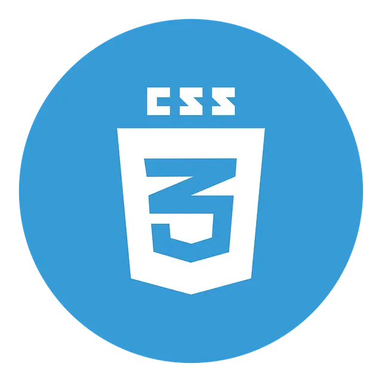

Definitions
HTML
HTML, or HyperText Markup Language, is the standard language used to create and design documents on the World Wide Web. It structures content on the web by defining elements such as headings, paragraphs, links, images, and other multimedia components, providing a foundational framework for building websites.
www.w3schools.com/htmlCSS
CSS, or Cascading Style Sheets, is a stylesheet language used to describe the presentation of a document written in HTML or XML. CSS controls the layout, colors, fonts, and overall visual appearance of web pages. By separating the content (HTML) from the design (CSS), it allows for greater flexibility and easier maintenance of web pages.
www.w3schools.com/cssJavaScript
JavaScript is a versatile, high-level programming language that is widely used for developing web applications and interactive websites. Initially created by Brendan Eich in 1995 while he was working at Netscape, JavaScript has since become an essential technology of the World Wide Web, alongside HTML and CSS.
https://javascript.infoMySQL
MySQL is an open-source relational database management system (RDBMS) that uses Structured Query Language (SQL) for accessing, managing, and manipulating data. Developed by Swedish company MySQL AB in 1995 and later acquired by Oracle Corporation, MySQL has become one of the most popular database systems in the world, known for its reliability, ease of use, and performance.
https://www.mysql.comNoSQL
NoSQL, which stands for "Not Only SQL," refers to a broad class of database management systems that diverge from the traditional relational database model. Unlike relational databases, which use structured query language (SQL) and a fixed schema to manage data, NoSQL databases offer flexible schemas, scalable performance, and are designed to handle large volumes of unstructured, semi-structured, or structured data.
https://en.wikipedia.org/wiki/NoSQL